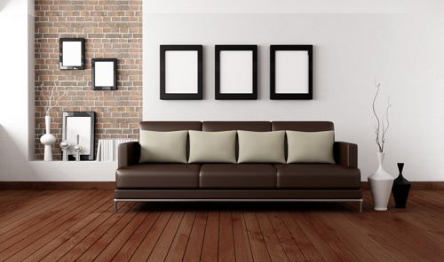

查看案例
莫亚家具：客户案例
睡眠从来就是人们感兴趣的研究课题，因为人的生命约有1/3是在睡眠中度过的，并且睡眠可以恢复精神和解除疲劳。自20世纪初，借助脑电图的分析，发现睡眠时脑电活动呈现特殊慢波。1952年又有人发现睡眠过程中经常发生短时间的、快速的眼球运动，并伴有快速低幅的脑电波。这一重要发现导致睡眠研究的蓬勃发展。已经证明。睡眠是大脑的主动活动过程，而不是被动的觉醒状态的取消；脑内许多神经结构和递质参与睡眠的发生和发展（从而开展了梦的生理学研究以及临床睡眠紊乱症的鉴别诊断和治疗等）。但至今对睡眠的起源、发生和发展的机制，时相转换的生理基础，以及睡眠如何消除疲劳等重要问题仍然不甚了解。 正常睡眼的时相 睡眠由两个交替出现的不同时相所组成，一个是慢波相，又称非快速眼动睡眠，另一个则是异相睡眠，又称快速眼动睡眠，此时相中出现眼球快速运动，并经常做梦。

慢波睡眠
根据人脑电波的特征，通常将此时相区分为4个不同的期，即相应于睡眠由浅入深的过程。第1期呈现低电压脑波，频率快慢混合，而以4～7周/秒的频率为主，它常出现在睡眠伊始和夜间短暂苏醒之后。第2期也是较低电压脑波，中间插入短串的12～14周/秒的睡眠梭形波和K复合波，它是慢波睡眠的主要成分，代表浅睡过程。第3期的脑电图常有短暂的高电压波，超过50微伏，频率为1～2周/秒，叫做δ波。第4期，δ波占优势，其出现时间占总时间的50％似上，代表深睡状态。因此，3、4两期仅有量的差别，而无质的差异。一般认为慢波睡眠第4期具有消除疲劳的功能，因为人在长时间体力劳动或不睡后，在恢复睡眠中此期延续很久。随着睡眠由浅入深，意识逐步丧失，血压略降，心率、呼吸减慢，瞳孔缩小，体温和代谢率均下降，尿量减少，胃液增多，唾液分泌减少，发汗功能增强等。
异相睡眠
它是在睡眠过程中周期出现的一种激动状态。脑电图呈现快频低压电波，类似清醒时脑波。自主神经系统活动增强，如心率、呼吸加速，血压升高，脑血流及耗氧量均增加，在男性则有阴茎勃起。此外，睡者时时翻身，面和指（趾）端肌肉不时抽动。在实验动物还记录到单个神经细胞的放电活动非但高于慢波相，有时还超过清醒状态下的活动水平。人的异相睡眠，和动物的一样，表现出3个特征：①低电压，快频脑波；②颈部肌肉张力松弛以及脊髓反射被抑制，此时运动系统受到很强抑制；③频繁出现快速的眼球运动，同时在一些和视觉有关的脑结构，包括大脑皮层视区，出现高大锐波，统称脑桥-膝状体-枕区皮层波（PGO）。由于快速眼动只存在于异相睡眠中，故后者常被叫做快速眼动睡眠。
阅读：8000+
莫亚木业长沙旗舰店
莫亚木业是一家大型的家具生产厂商，主要经营沙发，桌椅，床铺，衣柜等家庭家具。
长沙市五一路五一广场4楼